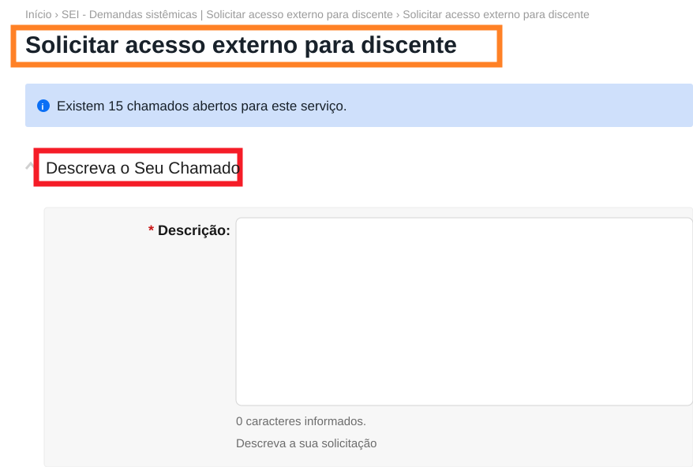
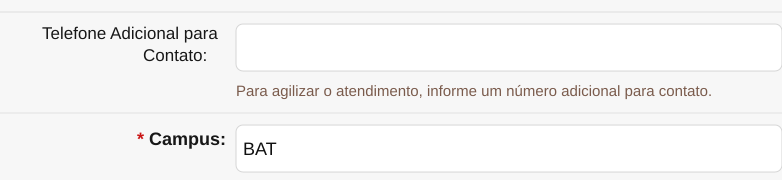

Este é o guia certo para você?
Se não lembrar se já fez o cadastro, use somente o mesmo e-mail pessoal cadastrado no Q-Acadêmico. Outro endereço pode gerar duplicidade e dificultar a liberação do acesso.
Antes de começar
- Tenha CPF, RG, órgão expedidor, endereço completo e telefone.
- Use o mesmo e-mail pessoal informado na ficha de pré-matrícula e cadastrado pela CCA no Q-Acadêmico.
- Não use o e-mail institucional
@aluno.ifce.edu.br. - Confirme que consegue acessar o e-mail escolhido.
- Tenha sua matrícula e acesso ao SUAP, pois a liberação será solicitada por chamado.
O mesmo endereço pessoal deverá constar no Q-Acadêmico e no SEI. Uma diferença entre os cadastros pode causar problemas de acesso e recuperação de senha.
1Abra o cadastro de usuário externo
Acesse a página do SEI para Usuários Externos e clique em Clique aqui para se cadastrar.

Na tela seguinte, clique em Clique aqui para continuar.

2Preencha seus dados pessoais
Informe os dados exatamente como aparecem em seus documentos. Preencha nome, CPF, RG, órgão expedidor, telefone e endereço residencial.

3Informe o e-mail e crie a senha
No bloco Dados de Autenticação, informe o e-mail pessoal cadastrado no Q-Acadêmico. Crie e confirme a senha.

- O endereço deve ser pessoal e estar ativo.
- Não pode ser o e-mail institucional.
- Guarde o e-mail e a senha: serão usados para acessar o SEI depois que o chamado for concluído com a liberação.
4Conclua o cadastro e abra o chamado direto
Revise os dados e finalize o formulário. O sistema informará que as instruções de ativação foram encaminhadas ao seu e-mail. Você pode prosseguir imediatamente: não precisa esperar a mensagem chegar.

O SEI enviará uma mensagem automática com instruções padrão e um link para o SUAP. Guarde-a como confirmação, mas não é necessário clicar no link. Para evitar redirecionamentos ou a perda da página depois do login, use o botão deste guia.
O botão abre diretamente o serviço “Solicitar acesso externo para discente” e evita o caminho manual: Central de Serviços → Abrir Chamado → Administração → aba SEI → opção 4.
Entre com sua matrícula e sua senha. Se, depois do login, o sistema abrir apenas a página inicial, volte a este guia e clique novamente em Abrir chamado de liberação no SUAP.
Consulte a seção A senha padrão não funcionou no guia de primeiro acesso ao SuapEdu.
5Preencha e envie o chamado
Antes de preencher, confirme se a página apresenta o título Solicitar acesso externo para discente. No campo Descrição, solicite a liberação do primeiro acesso e informe nome completo, CPF e o e-mail cadastrado no SEI.
{kind=link}

Prezado, Solicito a liberação do meu primeiro acesso como usuário externo (discente) ao SEI. Nome completo: [seu nome completo] CPF: [000.000.000-00] E-mail cadastrado no SEI: [seu e-mail] Desde já, agradeço a atenção.
Para este tipo de chamado, não anexe RG, CPF, comprovante de endereço ou qualquer outro arquivo. Informe os dados solicitados apenas no campo Descrição. Nunca anexe ou informe sua senha.
{kind=link}

O campo Telefone Adicional para Contato não aparece como obrigatório, mas é recomendável preenchê-lo quando possível. O campo Campus deve apresentar BAT.
{kind=link}
6Acompanhe o chamado e acesse o SEI
O chamado será encaminhado ao setor responsável. Para acompanhar, acesse SUAP → Central de Serviços → Meus Chamados.
Quando o chamado estiver fechado, abra-o e leia a resposta. A liberação precisa estar indicada na linha do tempo.
Após a confirmação da liberação, volte à página de Usuários Externos e entre com o mesmo e-mail e a senha criados no cadastro.

Problemas técnicos
Mensagens e situações mais comuns
“Já existe cadastro pendente relacionado com este e-mail”

Não faça outro cadastro. Verifique qual situação se aplica:
- Você concluiu o cadastro, mas ainda não abriu o chamado: prossiga pelo atalho direto para o chamado no SUAP.
- Você já abriu o chamado: acompanhe o andamento em SUAP → Central de Serviços → Meus Chamados e aguarde a conclusão.
Quando o acesso já foi liberado, esta não é a mensagem esperada. Não associe o aviso de cadastro pendente a esquecimento de senha.
“Já existe usuário cadastrado com este e-mail”

Essa mensagem indica que já existe um usuário associado ao endereço. Volte à tela de login. Caso não lembre a senha, use o guia de recuperação de senha do SEI.
Se você nunca conseguiu entrar, a recuperação não funcionar ou houver dúvida sobre a situação do cadastro, abra um chamado no SUAP pelo botão direto do passo 4 e transcreva a mensagem recebida.
“Consulta retornou mais de um registro de USUÁRIO”

Abra um chamado no SUAP pelo botão direto do passo 4 e solicite a correção do usuário duplicado. Depois da confirmação do ajuste, volte ao SEI e utilize Esqueci minha senha.
Prezado, Ao tentar acessar o SEI, recebi a mensagem “Consulta retornou mais de um registro de USUÁRIO”. Solicito a correção do cadastro duplicado. Nome completo: [seu nome completo] CPF: [000.000.000-00] Número de matrícula: [sua matrícula] Curso: [seu curso] E-mail pessoal utilizado no SEI: [seu e-mail] Atenciosamente,
O e-mail automático do SEI não chegou
Antes de repetir o cadastro, confirme que:
- verificou Spam, Lixo eletrônico, Promoções, Outros e pastas semelhantes;
- a caixa de e-mail não está cheia;
- aguardou alguns minutos;
- informou exatamente o e-mail pessoal cadastrado no Q-Acadêmico;
- está consultando a conta correta.
Se o sistema passar a informar que há cadastro pendente ou usuário já cadastrado, siga a orientação correspondente nesta seção em vez de preencher um novo formulário.
O e-mail de recuperação de senha do SEI não chegou
Confira as pastas de spam, o espaço disponível na caixa e se informou exatamente o e-mail cadastrado. Persistindo o problema:
- solicite à CCA a conferência ou alteração do e-mail pessoal no Q-Acadêmico;
- abra um chamado no SUAP para que o mesmo endereço seja conferido ou atualizado no cadastro do SEI;
- após a confirmação das duas informações, repita a recuperação de senha.
O endereço deve ser pessoal, ativo e igual nos dois sistemas.
Não lembro qual e-mail usei no SEI
Confirme com a CCA qual e-mail pessoal está cadastrado no Q-Acadêmico. Em seguida, abra um chamado no SUAP e solicite a conferência do endereço associado ao seu usuário externo no SEI. Informe nome completo, CPF, matrícula e curso.
Sei qual é o e-mail, mas quero alterá-lo
Solicite a alteração nos dois sistemas: à CCA, para o Q-Acadêmico, e por chamado no SUAP, para o cadastro do SEI. Informe exatamente o mesmo novo endereço pessoal nas duas solicitações.
Cadastros com e-mails diferentes podem causar novos problemas de acesso e recuperação de senha.
Perguntas frequentes
Dúvidas rápidas
Posso usar o e-mail institucional?
Não. Use um e-mail pessoal. O endereço institucional possui campo próprio e não deve ser utilizado como e-mail de recuperação no SEI.
Preciso abrir chamado no SUAP?
Sim. Depois do cadastro inicial, use o botão direto deste guia para abrir o formulário correto no SUAP. O e-mail automático do SEI funciona apenas como confirmação do cadastro.
Quanto tempo demora a liberação?
O serviço informa prazo estimado de até 36 horas após a abertura do chamado. Acompanhe o andamento em Meus Chamados.
Esqueci a senha criada no cadastro do SEI.
Consulte o guia de recuperação de senha do SEI.
Esqueci a senha do SUAP.
Use a seção A senha padrão não funcionou do guia de primeiro acesso ao SuapEdu.
Segurança
Proteja seus dados
- Não envie sua senha à CCA, ao Gabinete ou a qualquer outro setor.
- Confira se os endereços começam com
https://sei.ifce.edu.brouhttps://suap.ifce.edu.br. - Não compartilhe códigos ou mensagens de recuperação.
- Ao usar computador compartilhado, encerre a sessão ao terminar.
Atendimento
Liberação e correções no cadastro do SEI:
Use o formulário direto “Solicitar acesso externo para discente”.
Conferência ou alteração do e-mail pessoal no Q-Acadêmico:
cca.baturite@ifce.edu.br